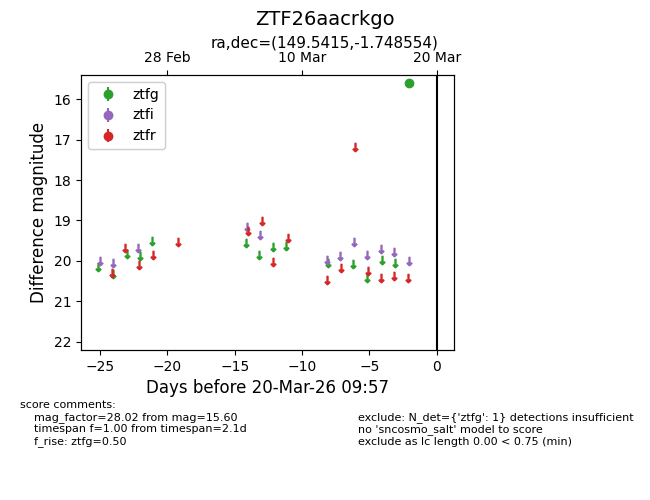
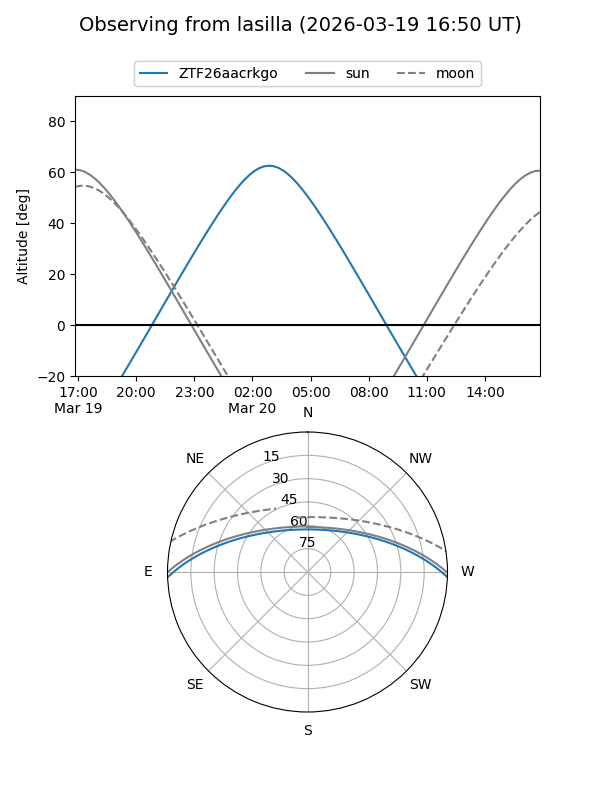
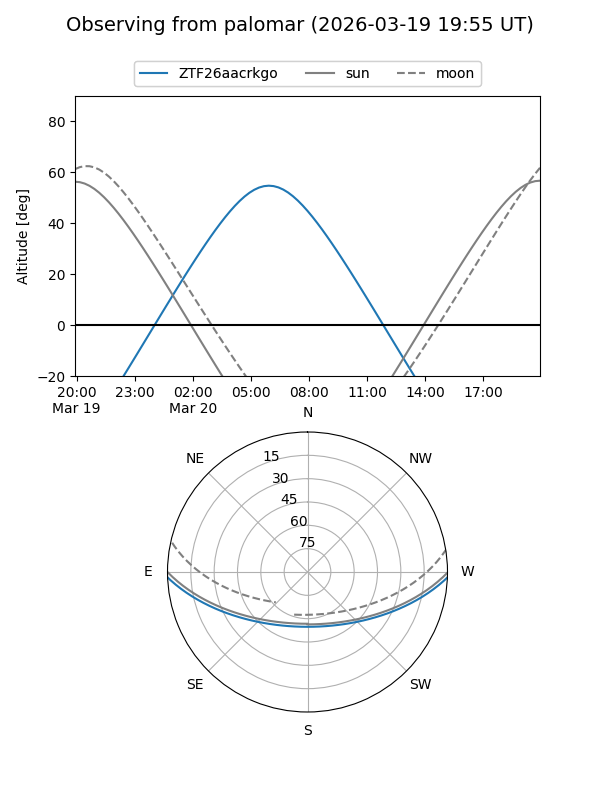

ZTF26aacrkgo
Target ZTF26aacrkgo at 2026-03-20 09:59
Aliases and brokers:
FINK: link
Lasair: link
ALeRCE: link
alt names
ZTF26aacrkgo (ztf,fink_ztf)
Coordinates:
equatorial (ra, dec) = 149.5415,-1.74855
equatorial (HMS+DMS) = 09:58:09.97,-01:44:54.79
galactic (l, b) = (240.5495,+39.29422)
Flags:
Photometry:
last ztfg=15.60
1 ztfg detections
Lightcurve

Visibility


Additional plots